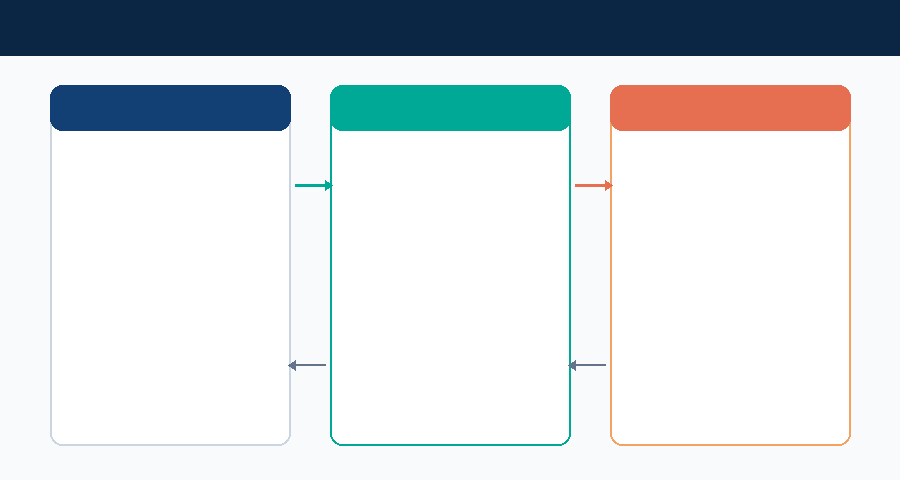
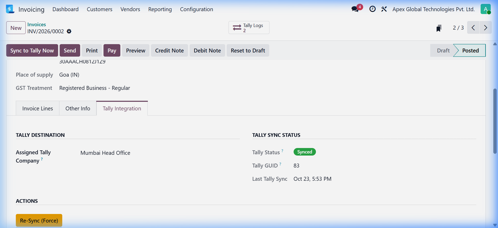
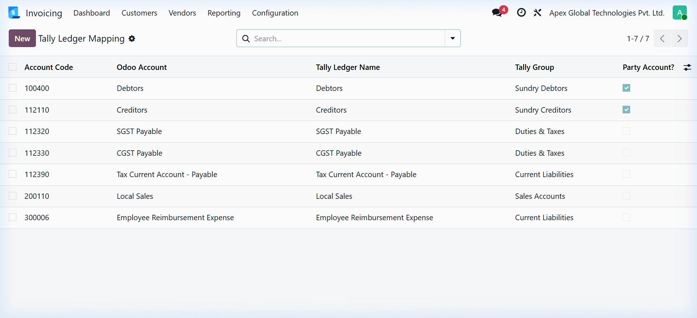
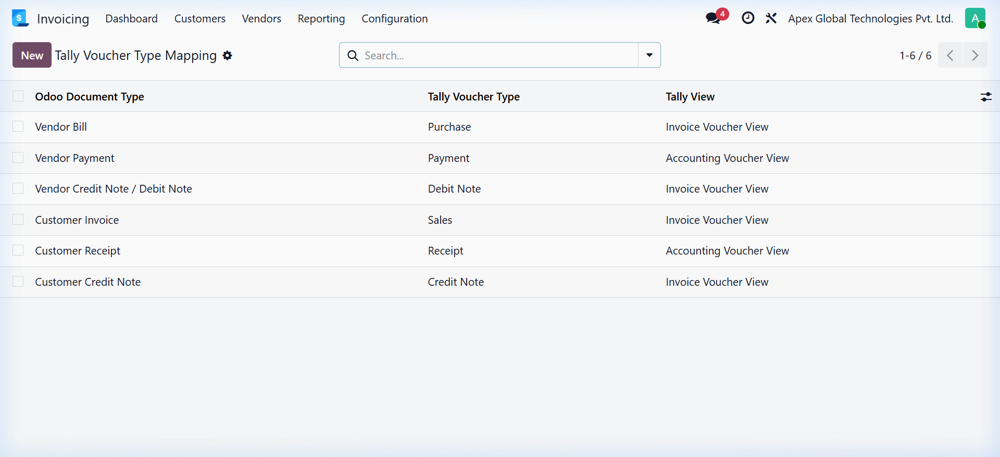
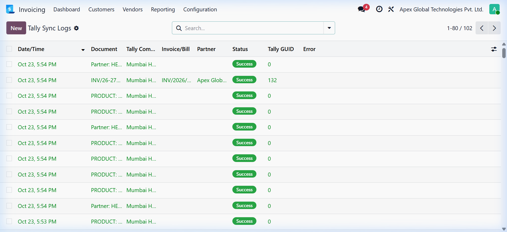
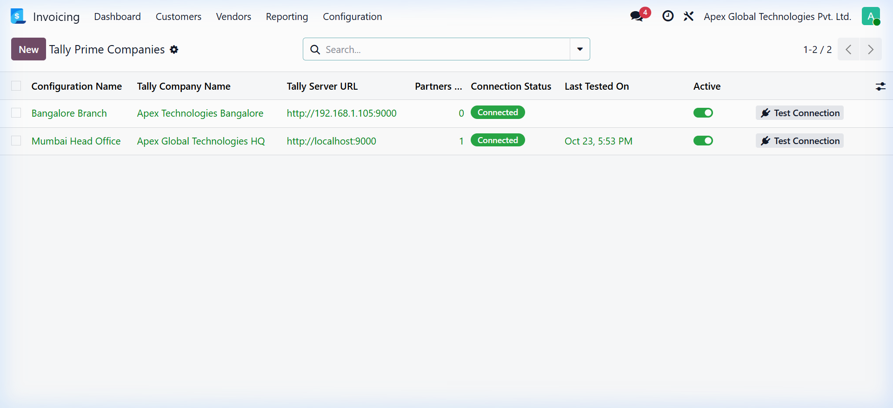
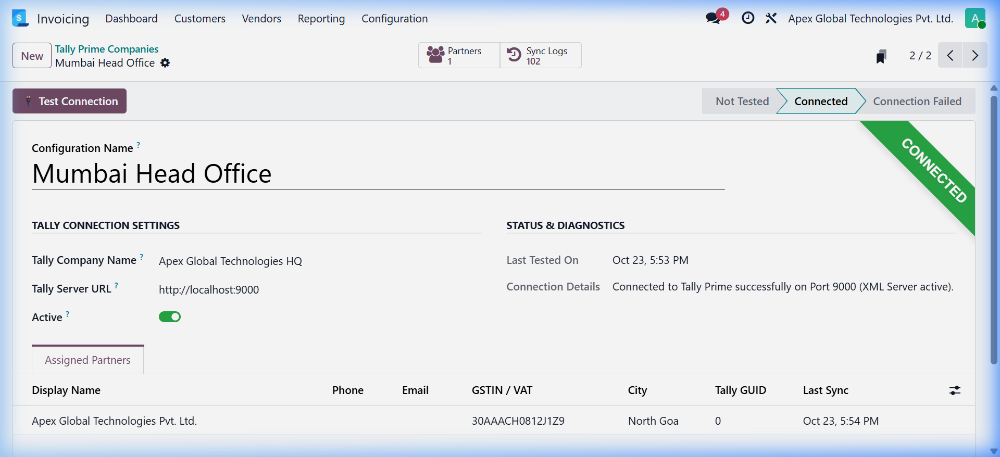
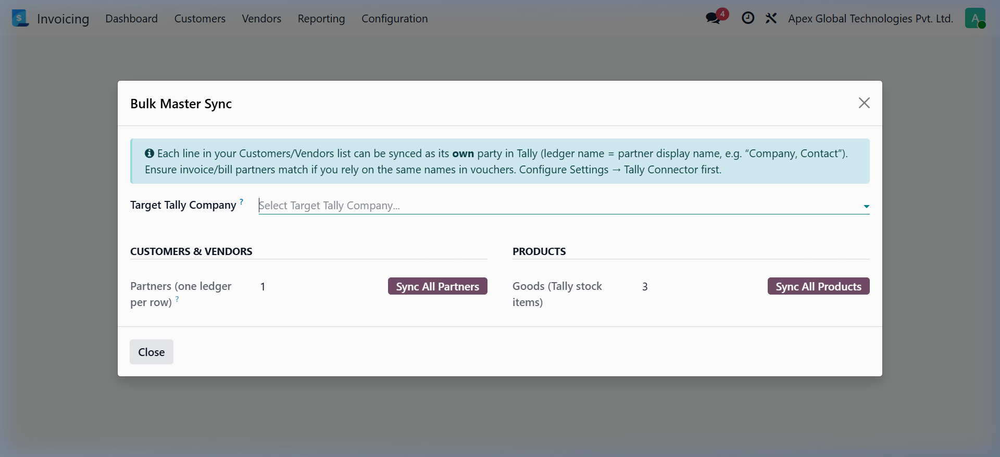

Seamlessly synchronize Customer Invoices, Vendor Bills, Credit/Debit Notes, and Payments directly to Tally Prime using Tally's native HTTP XML interface. Built for precision accounting compliance, sign integrity, and audit transparency.
Direct socket-to-socket communication between Odoo server and Tally Prime XML HTTP Server without recurring cloud subscriptions or middleware.

Designed by senior accounting architects to guarantee mathematical balance, ledger safety, and complete regulatory compliance.
-AMOUNT with ISDEEMEDPOSITIVE=Yes), and Credit entries are positive (+AMOUNT). Eliminates ledger imbalance errors.
Captured from real Odoo 19 Community runtime environments demonstrating genuine production views.







Verified parameters for enterprise deployment.
| Specification | Details & Supported Parameters |
|---|---|
| Odoo Compatibility | Odoo 19.0 Community Edition & Odoo 19.0 Enterprise Edition |
| Tally Prime Compatibility | Tally Prime Release 2.x, 3.x, 4.x, 5.x (Standard & Gold editions with XML HTTP enabled) |
| Protocol & Port | Direct HTTP POST, UTF-16 Little Endian BOM XML Envelope on Port 9000 (configurable) |
| Supported Document Types | Customer Invoices (Sales), Vendor Bills (Purchase), Customer Credit Notes, Vendor Debit Notes, Receipts, Payments, and Manual Journal Entries |
| Python Dependencies | requests (standard HTTP library included in Odoo Python environment) |
| Odoo Dependencies | account, base_setup, uom |
| Security & Permissions | Full RBAC integration: Invoicing User (Read Logs & Status), Accounting Manager (Full Mapping & Configuration CRUD) |
| License | LGPL-3 |
Get your Odoo to Tally synchronization running in less than 15 minutes.
In Tally Prime, press F1 (Help) → Settings → Connectivity → Client/Server configuration. Set Enable XML Server = Yes on Port 9000.
Navigate to Accounting → Settings → Tally Prime Connector. Enter your Tally Server URL (http://localhost:9000 or LAN IP) and exact Tally Company Name. Click Test Connection.
Open Customers → Tally Connector → Mappings → Ledger Mapping. Map your Sales, Purchase, Tax, and Party accounts to their corresponding Tally ledgers.
Post an invoice. With automatic sync enabled, transactions flow straight into Tally. View status badges on invoice headers and inspect full XML in Sync Logs.
Install our companion addon Tally Multi-Company Connector (odoo_tally_multi_company) to connect multiple Tally company instances simultaneously on different ports or remote servers, with automatic partner-to-company destination routing.
Real answers to common operational questions.
http://localhost:9000 is used when both run on the same computer, you can configure any valid LAN IP address (e.g. http://192.168.1.100:9000) or secure VPN tunnel endpoint in the settings.REMOTEID attribute. Furthermore, Odoo stores Tally's generated internal GUID and skips re-transmitting already synced documents unless manually forced by an authorized accountant.ISDEEMEDPOSITIVE=Yes, while Liability and Income credits are positive with ISDEEMEDPOSITIVE=No.